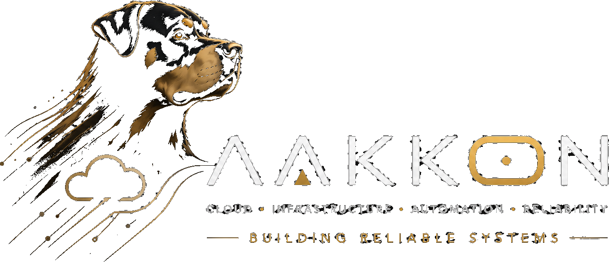

DevOps & Automation Engineer
Reliable cloud systems, engineered for long-term operation.
Infrastructure, automation and operational systems designed to remain maintainable and easy to run.
A personal portfolio for architecture, DevOps and automation work, with direct access to the most relevant public repositories.
About
Pere Cortijos is focused on connecting people, processes and technology to create solutions that are maintainable, scalable and useful.
AAKKON is not a company. It is a personal space for sharing projects, ideas, experiments and lessons learned from building systems.
Projects
Selected work and live concepts. Public repositories are marked for direct access.
Current Explorations
- Secure Data Exchange (SDE)
- Cloud-native architectures
- Infrastructure as Code at scale
- Data pipelines and observability
- Technical coordination and leadership